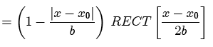

The triangle function has unit amplitude at the origin. Its amplitude decreases from the maximum at a constant rate until reaching zero.
The more general form of the TRI includes parameters for the location of the center of symmetry x0 and of the width b:


Parameters:
Support: 1 (scaled by width parameter)
Area: 1 (scaled by width parameter and amplitude)
Symmetry: even
Read more about the triangle function at: